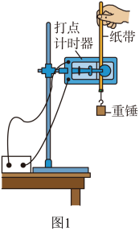
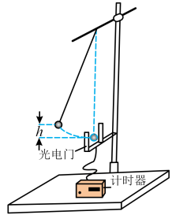
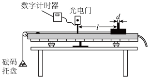
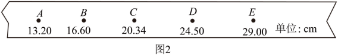
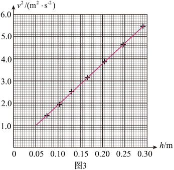

验证机械能守恒定律

实验原理
机械能守恒的本质：ΔEk = |ΔEp|，即动能增加量等于重力势能减少量（质量 m 通常可约去）。不同方案的区别只在如何测速度 v 和如何测高度 h。
方案一：自由落体 + 打点计时器（最经典）【图1】
· 装置：铁架台（带铁夹）、打点计时器、纸带、重锤、刻度尺、交流电源（50 Hz）
· 原理：mgh = ½mv² → gh = ½v²，验证某点 ghn ≈ ½vₙ²
· 测速：vn = (hn+1 − hn−1)/(2T)
· 图像法：作 v²–h 图像，应为过原点直线，斜率 = 2g
· 关键：不需要测质量 m；必须先接通电源再释放纸带；打点计时器竖直、限位孔在同一竖直线
方案二：单摆（圆周运动）+ 光电门【图2】
· 装置：铁架台、细线、小钢球、光电门（置于最低点）、游标卡尺
· 原理：小球从偏离竖直线某高度 h 处静止释放，到最低点：mgh = ½mv²
· 测速：v = d/Δt（d 为小球直径，Δt 为挡光时间）
· 关键：光电门光速须对准小球球心经过的位置（最低点）；细线质量与阻力忽略；从静止释放（初速为 0）
方案三：气垫导轨 + 光电门（斜面下滑）
· 装置：气垫导轨（一端垫高）、滑块、遮光片、两个光电门、刻度尺
· 原理：滑块沿倾斜导轨下滑，高度下降 h：mgh = ½mv₂² − ½mv₁²
· 测速：两光电门分别测 v₁ = d/Δt₁、v₂ = d/Δt₂；h = L·sinθ（L 为两光电门间距，θ 为导轨倾角）
· 关键：气垫把摩擦降到极低；需测（或已知）导轨倾角；遮光片宽度 d 要小
方案四：平抛运动
· 装置：斜槽（末端切线水平）、小钢球、白纸、复写纸、刻度尺
· 原理：½mv₀² + mgh = ½mv²，即验证末动能增量等于势能减少量
· 测速：由平抛规律，水平 x = vt，竖直 y = ½gt²，联立求 v₀ 与落地速度 v
· 关键：斜槽末端切线必须水平；小球每次从同一位置由静止释放；用重锤线确定坐标原点
📌 通用误差分析：由于空气阻力、纸带与限位孔摩擦、光电门测的是平均速度（非瞬时）等，实测 ΔEk 通常略小于 |ΔEp|（相对误差 η = (Ep − Ek)/Ep × 100%），一般 η < 6% 即可认为守恒。
闯关练习


高考真题
（2025·河南·高考真题）实验小组利用图1所示装置验证机械能守恒定律。可选用的器材有：交流电源（频率 50Hz）、铁架台、电子天平、重锤、打点计时器、纸带、刻度尺等。
(1) 下列所给实验步骤中，有4个是完成实验必需且正确的，把它们选择出来并按实验顺序排列：________（填步骤前面的序号）
①先接通电源，打点计时器开始打点，然后再释放纸带
②先释放纸带，然后再接通电源，打点计时器开始打点
③用电子天平称量重锤的质量
④将纸带下端固定在重锤上，穿过打点计时器的限位孔，用手捏住纸带上端
⑤在纸带上选取一段，用刻度尺测量该段内各点到起点的距离，记录分析数据
⑥关闭电源，取下纸带
(2) 图2所示是纸带上连续打出的五个点A、B、C、D、E到起点的距离。则打出B点时重锤下落的速度大小为________ m/s（保留3位有效数字）。

图2：纸带上 A～E 点到起点距离
(3) 纸带上各点与起点间的距离即为重锤下落高度 h，计算相应的重锤下落速度 v，并绘制图3所示的 v²–h 关系图像。理论上，若机械能守恒，图中直线应________（填“通过”或“不通过”）原点且斜率为________（用重力加速度大小 g 表示）。由图3得直线的斜率 k = ________（保留3位有效数字）。

图3：v²–h 关系图像
(4) 定义单次测量的相对误差 η = (Ep − Ek) / Ep × 100%，其中 Ep 是重锤重力势能的减小量，Ek 是其动能增加量，则实验相对误差为 η = ________ × 100%（用字母 k 和 g 表示）；当地重力加速度大小取 g = 9.80 m/s²，则 η = ________ %（保留2位有效数字），若 η < 6%，可认为在实验误差允许的范围内机械能守恒。
【答案】 (1) ④①⑥⑤ (2) 1.79 (3) 通过 / 2g / 18.6 (4) (2g−k)/(2g) × 100% / 5.1
▸ 查看详解
（1）实验步骤：④ → ① → ⑥ → ⑤。由 mgh = ½mv² 知 m 可约掉，不必用电子天平（步骤③错误）；必须先接通电源再释放（②错误）。
（2）T = 1/f = 0.02 s；中间时刻速度等于平均速度：vB = hAC/(2T) = (0.2034 − 0.1320)/0.04 ≈ 1.79 m/s。
（3）由 mgh = ½mv² 得 v² = 2g·h，故直线通过原点，斜率 = 2g；由图3，k = (5.0−1.0)/(0.265−0.05) ≈ 18.6。
（4）η = (mgh − ½mv²)/(mgh) × 100% = (2g − k)/(2g) × 100%；代入 g = 9.80、k = 18.6 得 η ≈ 5.1% < 6%，符合守恒。